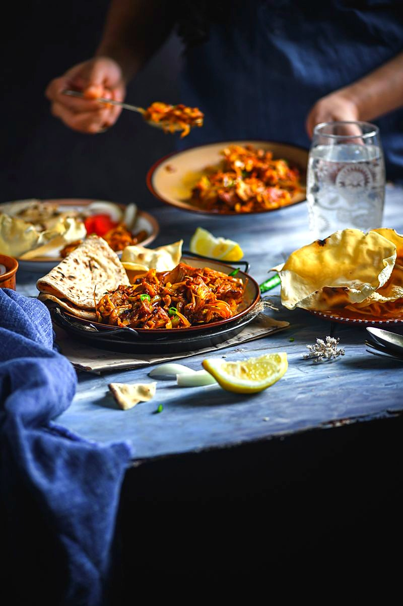

Kathal ki Sabzi
raw jackfruit browned in mustard oil and simmered in a dark bhuna masala, meaty enough to fool anyone

Contains: mustard
Ingredients
Quantities for 4.
- 600g, peeled and cut into 4cm pieces Raw Jackfruitoil your hands and the knife first, the sap is glue
- 6 tbsp Mustard Oil4 for frying the jackfruit, 2 for the masala
- 2 medium, finely sliced Onion
- 2 medium, pureed Tomato
- 1 tbsp paste Ginger
- 1 tbsp paste Garlic
- 1 tsp Cumin Seeds
- 1 Bay Leaf
- 1 Black Cardamom
- 3/4 tsp Turmeric
- 2 tsp Coriander Powder
- 1 tsp Chilli Powder
- 1 tsp Fennel Powder
- 1/2 tsp Garam Masala
- 3 tbsp, chopped Coriander Leavesoptional
- to taste Salt
- 250ml, hot Water
Cookware
stovetop, kadhai
Checked against the ingredient list for ten allergens: milk, egg, fish, crustaceans, tree nuts, peanuts, sesame, mustard, soy and gluten. Brands vary, so read the label on anything new to you.
Before you start
- Rub oil on your palms and knife before you touch the jackfruit. The latex sap will not wash off otherwise.
- Toss the cut pieces with 1/2 tsp salt and 1/4 tsp turmeric and leave 15 minutes; they fry to a better colour.
- Heat the mustard oil to smoking once at the start and let it cool a little. Raw mustard oil is harsh.
Method
- Heat 4 tbsp mustard oil in a kadhai and fry the jackfruit in two batches over medium heat, 6-7 minutes a batch, turning until the pieces are gold on all faces. Drain and set aside.Crowding the pan steams the jackfruit and it will never brown. Two batches, no shortcuts.
- Add the remaining 2 tbsp oil, then the cumin, bay leaf and black cardamom. Let them crackle 30 seconds.
- Add the sliced onion and fry 10-12 minutes over medium heat until deep brown at the edges.
- Stir in the ginger and garlic pastes and cook 2 minutes, until the sharp smell lifts.
- Add the turmeric, coriander, chilli and fennel powders with 2 tbsp water and fry 1 minute.
- Pour in the tomato puree and salt. Bhuno on medium heat 8-10 minutes, until the masala darkens and oil beads out at the sides.This is the step that decides the dish. Stop only when you can see clear oil separating.
- Return the jackfruit, turn it through the masala for 2 minutes, then add the hot water.
- Cover and simmer on low 15-18 minutes, until a knife slides into a piece with no resistance and the gravy clings.
- Sprinkle the garam masala, cover off the heat for 5 minutes, then finish with the coriander leaves.
Storage
Keeps 3 days refrigerated and improves overnight as the jackfruit absorbs the masala. Reheat covered on low with 2 tbsp water.
Nutrition Medium estimate
Low protein: 5 g a serving, 5% of the calories
| Per serving311 g | Per 100 g | |
|---|---|---|
| Calories | 388 kcal | 125 kcal |
| Protein | 4.9 g | 2 g |
| Carbohydrate | 47.1 g | 15 g |
| of which sugars | 32.9 g | 11 g |
| Fibre | 5.8 g | 2 g |
| Fat | 23.0 g | 7 g |
| of which saturated | 2.9 g | 1 g |
| of which unsaturated | 18.0 g | 6 g |
Ingredients given to taste count as zero, so the real figures run a little higher. Nearest database match used for garam masala. Estimated from raw ingredients using USDA FoodData Central.
More like this: Vegan Indian recipes · Vegetarian Indian recipes · Gluten-free Indian recipes · Dairy-free Indian recipes · Awadhi/Lucknowi recipes
Times, yields, allergens and nutrition are guidance. Use your own judgement on doneness and on storing. More in About.